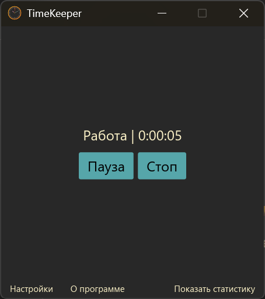
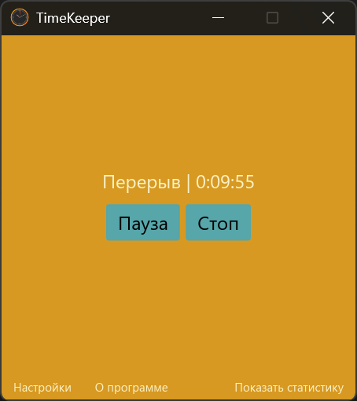
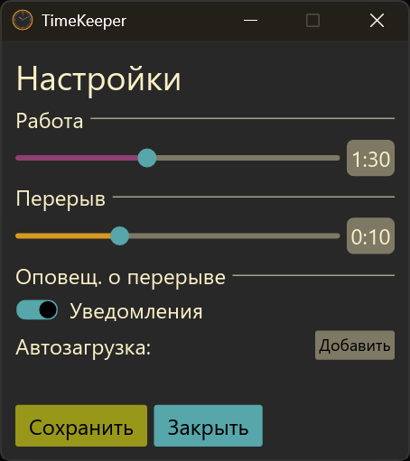
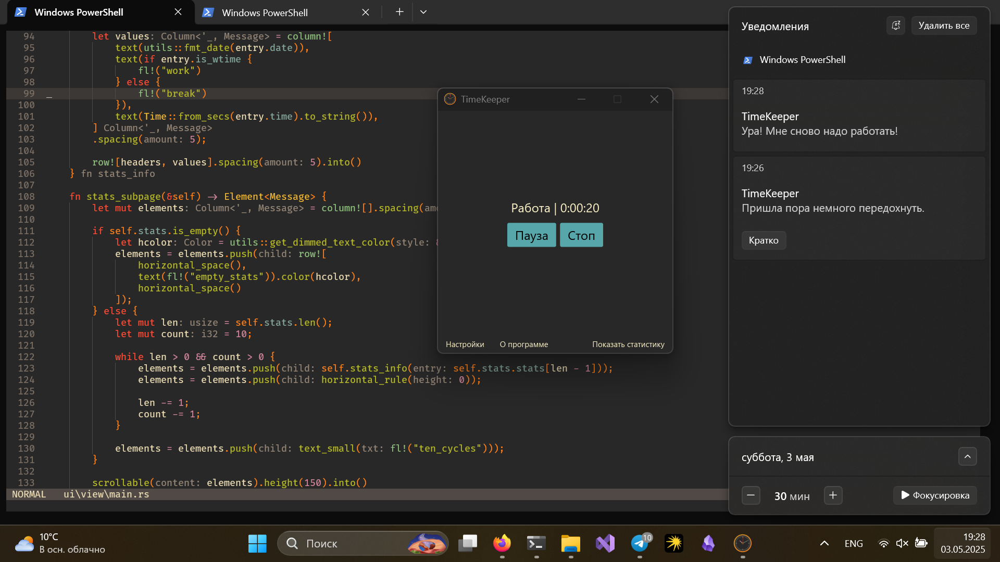

Скриншоты TimeKeeper
Посмотрите, как выглядит TimeKeeper в работе

Главное окно программы
Простой и понятный интерфейс с таймером и статистикой работы

Динамичный интерфейс
В зависимости от цикла (работа, отдых) интерфейс перекрашивается в соответствующий цвет

Страница настроек
Простая настройка интервалов работы и отдыха под ваши потребности

Уведомления
TimeKeeper работает в свёрнутом режиме и не мешает вашей работе